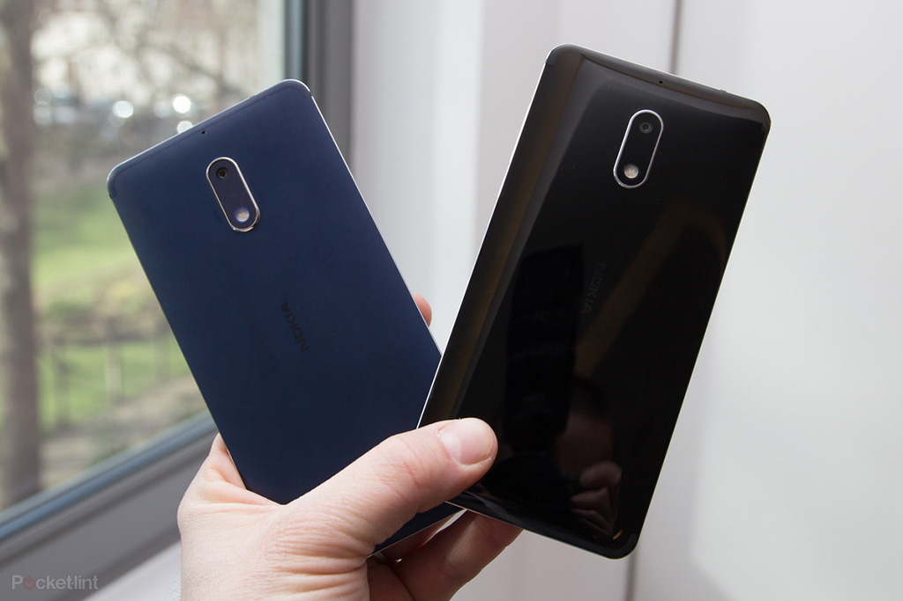
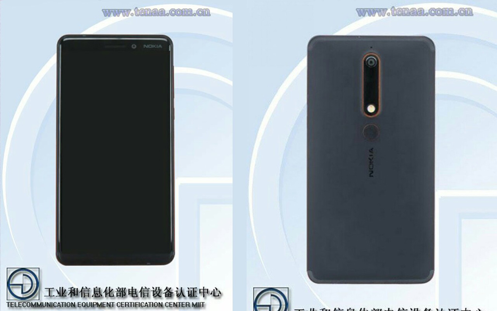

Rò rỉ thông số kỹ thuật Nokia 6 (2018) trên TENAA với 4GB RAM cùng màn hình tỷ lệ 16:9

Nokia 6 (2018) hay còn biết đến với tên mã TA-1054 sau khi rò rỉ hình ảnh trên TENAA một vài tuần trước thì nay thông số kỹ thuật của thiết bị lại tiếp tục được lộ diện trên trang web một lần nữa.
Về kích thước, Nokia 6 (2018) sở hữu màn hình kích thước 5.5 inch cùng độ phân giải Full HD 1920x1080. Điểm đặc biệt lần này là thiết kế màn hình tỷ lệ 16: 9 (không phải 18: 9 như tin đồn trước đó). Kích thước của thiết bị là 148,8 x 75,8 x 8,15 mm.

Về cấu hình, máy được trang bị 4GB RAM cùng bộ nhớ trong 32 GB hoặc 64 GB có thể mở rộng dung lượng lưu trữ (tối đa 128 GB). Thiết bị còn mang trong mình sức mạnh từ chipset octa-core xung nhịp lên đến 2,2 GHz.
Được biết Nokia 6 (2018) sở hữu camera 16MP ở mặt sau cùng camera 8MP ở mặt trước, viên pin 3000mAh như người tiền nhiệm và hoạt động trên nền tảng Android 7.1.1 Nougat. Ngoài ra, danh sách trên TENNA còn cho biết thêm thiết bị sẽ bao gồm ba phiên bản màu khác nhau với trắng, xanh dương và đen.